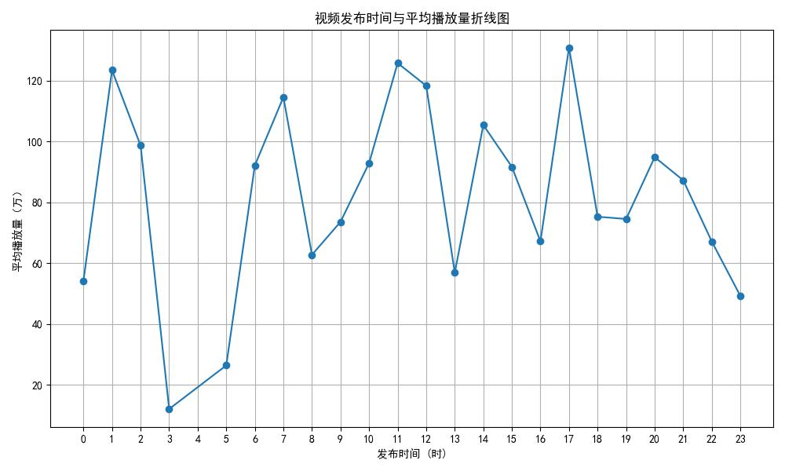

B站500条综合热门视频数据分析
数据概览
总视频数
500
总播放量
4.68亿次
总弹幕数
176万条
总播放量前30名发布者

注：前 30 名发布者总播放量有差距，“纸飞君”“方星宇i” 等头部发布者播放量突出，占据流量优势；也有播放量稍低但仍靠前的，平台可扶持不同层级创作者，头部发挥引领，腰部、尾部挖掘潜力 。
各分区视频平均播放量

注：不同内容分区的视频平均播放量差异显著 。像 “鬼畜”“游戏” 等分区平均播放量较高，反映出这些内容受众广、受欢迎；部分分区如 “ASMR” 等播放量低，说明其受众相对小众，可依此优化内容布局与选题。
发布时间与平均播放量关系

注：播放量随发布时间波动，1 点、11 点、18 点左右有播放量高峰，3 点是低谷。运营者可参考此规律，在流量高峰时段发布视频，提升传播效果。
视频标题关键词云图

注：“我”“你”“是”“都” 等文字突出，结合 “高考”“视频”“游戏” ，内容围绕个人视角、高考相关及游戏等话题，反映用户关注与创作主题倾向。
播放量与弹幕数相关性分析

注：整体看播放量和弹幕数有一定正相关，多数播放量低的视频弹幕数也少；但也有播放量高、弹幕数差异大的情况，说明除播放量，还有内容互动性等因素影响弹幕，创作者可优化内容促互动。